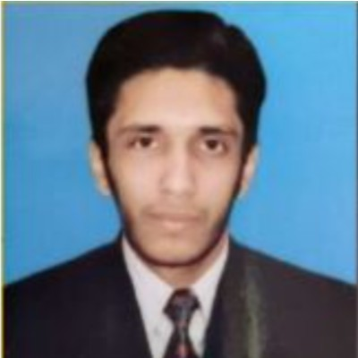
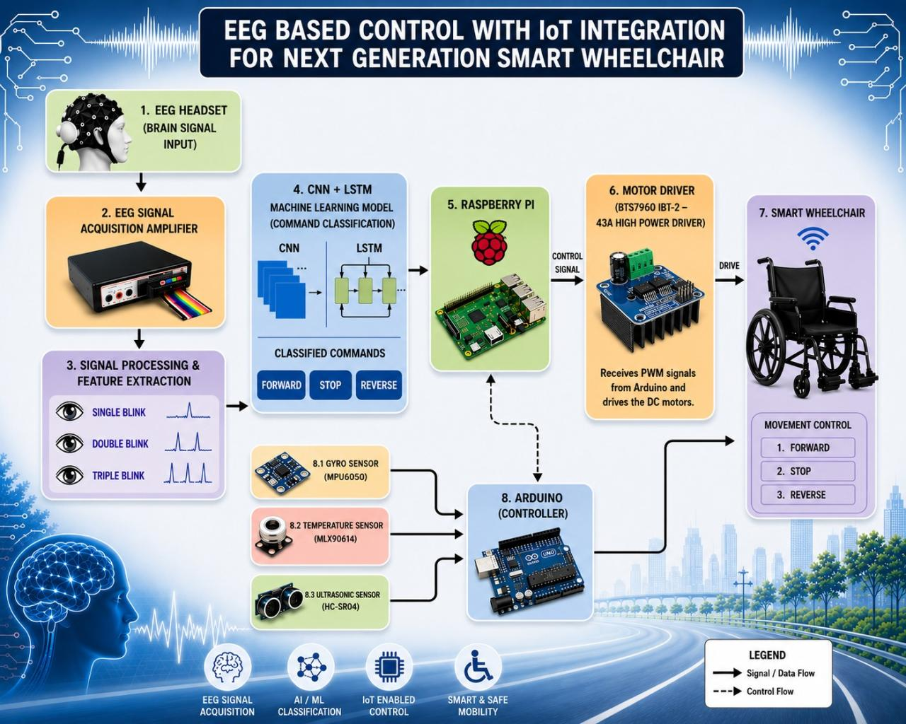
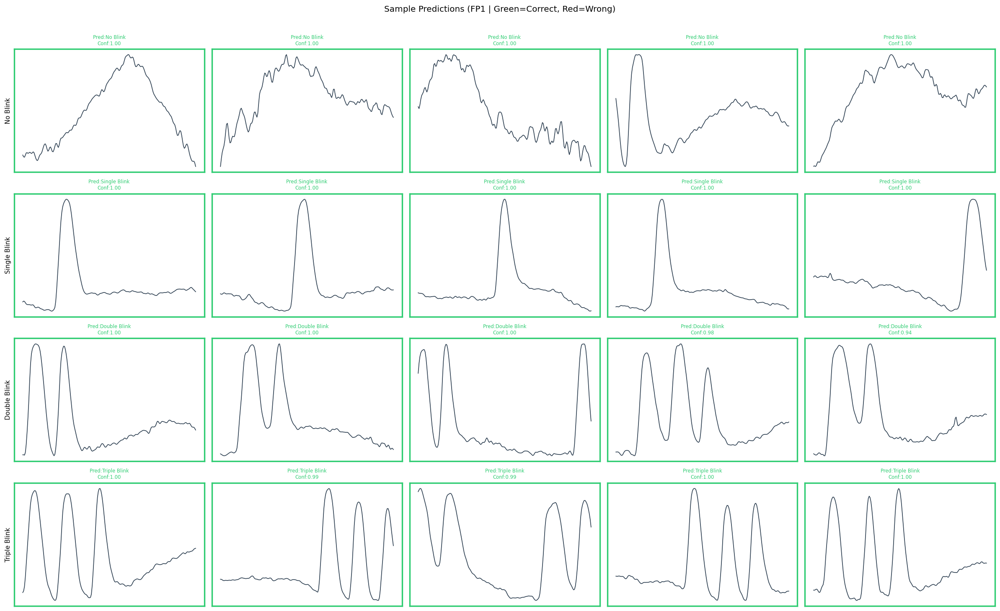
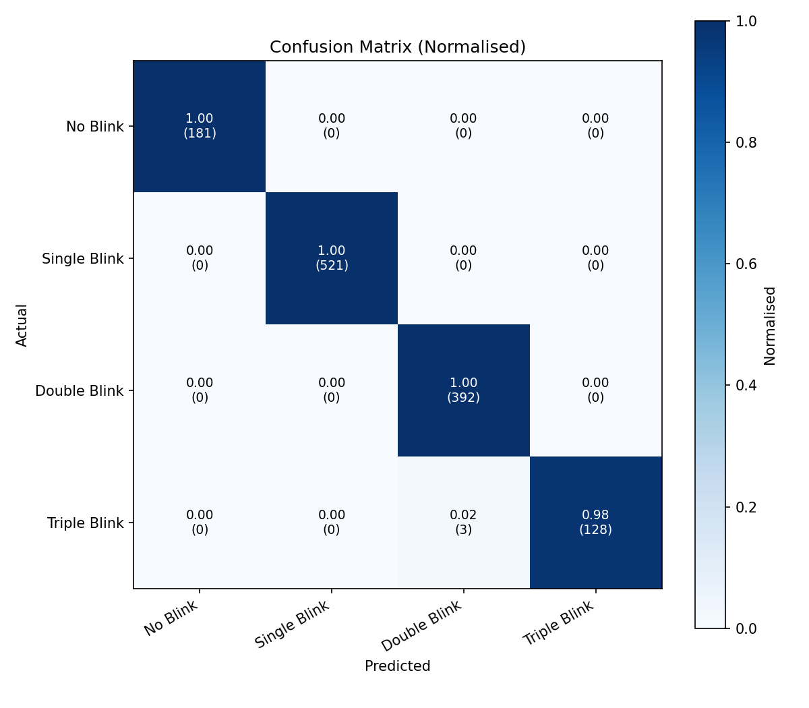

⌘
Embedded Systems
Microcontrollers, sensors, hardware-software integration, and connected devices.
Embedded Systems · Robotics · Artificial Intelligence
Electrical Engineering graduate from the International Islamic University Islamabad, interested in intelligent embedded systems, Artificial Intelligence, robotics, neural networks, and biomedical technology. My goal is to develop engineering solutions that connect electronics, software, and intelligent control, particularly in assistive and rehabilitation technologies.

I am an Electrical Engineering graduate from the International Islamic University Islamabad, Pakistan. My academic background has introduced me to electronics, programming, embedded systems, signal processing, and engineering analysis.
My final-year project, EEG-Based Control with IoT Integration for Next-Generation Smart Wheelchairs, explored brain-signal-based control and assistive mobility. My individual work focused on EEG signal filtering, noise reduction, testing, and implementing the machine-learning model.
I also completed a six-week internship at IESCO's Chaklala
132 kV Grid Substation, including two weeks in the Protection
and Instrumentation section.
In addition, nearly six years of
teaching and administrative experience have strengthened my
communication, organisation, and problem-solving skills.
I plan to pursue postgraduate education and research in intelligent engineering systems, with particular interest in embedded AI, neural networks, robotics, biomedical signal processing, and rehabilitation technology.
Microcontrollers, sensors, hardware-software integration, and connected devices.
Intelligent control, sensing, automation, and assistive robotic systems.
Exploring machine learning and neural networks for engineering applications.
Biomedical signals and technologies supporting mobility and rehabilitation.
My intended postgraduate research interests connect electrical engineering with artificial intelligence, embedded computing, and human-centred technology.
Neural-network architectures, machine learning, intelligent classification, and AI applications in engineering.
Exploring intelligent functions on embedded platforms for responsive, resource-aware applications.
Sensor-based control, human-machine interaction, automation, and assistive robotics.
EEG/EMG/ECG acquisition, signal filtering, noise reduction, and physiological signal-based interfaces.
Engineering technologies that may support mobility, accessibility, independence, and rehabilitation.
Exploring how electronics, embedded computing, and connectivity can support monitoring and control.
Academic engineering projects that reflect my interests in biomedical signals, electronics, embedded systems, and programming.
An academic project exploring hands-free wheelchair control using electroencephalography (EEG) signals, with IoT-enabled monitoring and supporting safety features.
Conventional wheelchair controls may be challenging for people with severe mobility limitations. This project investigated brain-signal-based interaction as a potential alternative control approach, with the broader aim of supporting accessible mobility.
The processing pipeline connects EEG acquisition with signal processing, classification, and control. Actual implementation details should reflect the final system you built and tested.
IoT monitoring and sensor-based safety functions were additional elements of the project concept.
My primary contribution focused on the signal-processing and software aspects of the project. I worked on EEG signal filtering, noise reduction, testing, and implementation of the machine-learning model. This experience helped me understand the challenges of preparing biomedical signals for pattern recognition and control.
Retain only the technologies you actually used in the final project.
Add your actual EEG setup photographs, signal plots, hardware
images, and testing screenshots. Store them in the images
folder beside this HTML file.

Equipment and setup used during EEG signal collection.

Single, Double and Triple Blinks Signal.

Actual hardware, controller, sensors, and connections.

Deep Learning Model Verification
The project included EEG-related research activities at Shifa International Hospital and PIMS. Add a publication, poster, report, or other public research resource if available and approved for sharing.
An academic project focused on electronic access control and the integration of hardware components into a security-oriented system.
An academic communications project focused on recovering the message signal from an amplitude-modulated signal.
Practical experience with front-end development, JavaScript, and WordPress-based websites. Add links to individual projects when available.
My experience includes electrical utility exposure and teaching and administrative responsibilities.
Completed a six-week internship providing exposure to electrical utility operations at a grid substation, including two weeks in the Protection and Instrumentation section.
Teaching and administrative responsibilities have helped me develop communication, planning, organisation, leadership, and problem-solving skills alongside my engineering education.
A combination of engineering fundamentals, programming, technical tools, and transferable professional skills.
International Islamic University Islamabad (IIUI), Pakistan
CGPA: 3.37 / 4.00
DigiSkills courses in Graphic Designing, Digital Marketing, and AutoCAD.
These courses supported my broader interest in digital tools, design, and continuous learning.
I welcome opportunities related to postgraduate study, research, embedded systems, robotics, biomedical technology, and relevant engineering roles. I am particularly interested in connecting with researchers and teams working on intelligent and assistive technologies.
Feel free to contact me about Master's opportunities, scholarships, research collaboration, internships, or engineering roles related to my interests.
Send Me an Email ↗